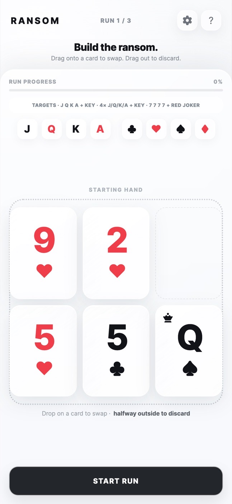
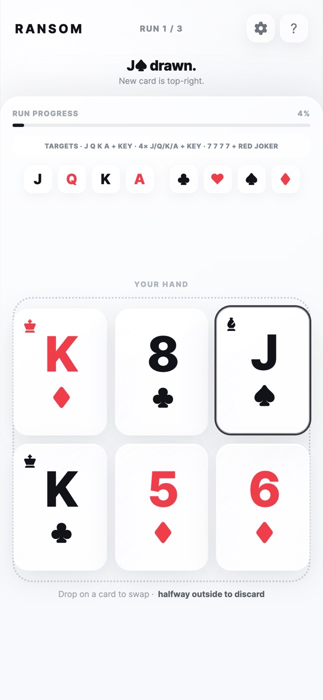
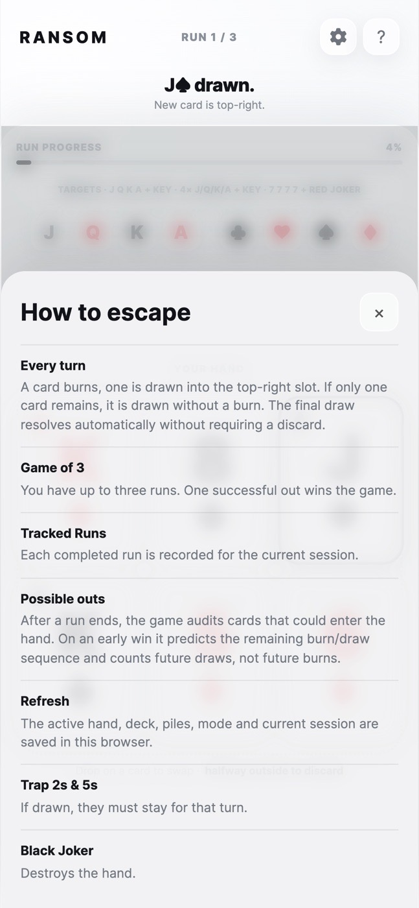

Ransom
A solo, poker-style card game I invented on holiday, now playable on a phone without a deck of cards.

- Type
- Card game
- Built with
- Plain JavaScript, HTML, CSS
- Status
- Playable
- Origin
- A holiday evening and a real deck of cards
- Input
- Touch and mouse
The idea
Where it came from
My family loves playing cards on holiday, and we could play all day. One evening, while I was waiting for my partner to get ready for a night out, I was bored and wanted to see whether I could play a card game on my own, poker style. So I made up Ransom.
The app came from wanting to explore where I could take it, and to be able to play it without a deck of cards. It is a simple project, but it was a lot of fun to make.
The game has a tense rule: you burn a card before every draw, and special cards can wreck or rescue your hand. It is built for a phone, where cards are dragged rather than clicked.
How it works
The experience, step by step
- Build a handStart with five cards from a 54-card deck.
- Draw and discardEach turn burns a card, then draws one. Swap a card by dragging onto another, or drag it out to discard.
- Watch the traps2s and 5s are trap cards that stay in your hand. A Black Joker destroys it, a Red Joker recovers the burn pile, and the two cancel each other.
- EscapeComplete a Royal Flush, Four of a Kind or All the Keys before the deck runs out. The standard game gives three runs.
The rules
Escape before the deck runs out
The deck is 52 cards plus a Red and a Black Joker. You start with five cards and a sixth slot where each new card lands. A run ends when you complete an escape hand or the deck is empty.
- Royal Flush Out: J, Q, K and A of one suit, plus one key card.
- Four of a Kind Out: four of the same court rank or Ace, plus one key card.
- All the Keys: the Red Joker and all four 7s.
- Key cards are the 7s and the Red Joker.
- Trap cards: when you draw a 2 or a 5, no 2 or 5 in your hand can be discarded that turn, so you have to get rid of something else.
- Jokers: the Black Joker wipes your hand. The Red Joker is a key, and discarding it shuffles the burn pile back into the deck. If you hold the Red Joker when the Black one arrives, they cancel out.
In use
Screenshots


Breakdown
What's inside
Drag, swap, discard
A pointer-event layer handles dragging. Dropping on a card swaps; letting go with less than half the card inside the hand discards it.
A rules engine in small functions
Burn-before-draw, trap cards, joker effects and win detection are separate functions, so each rule can be changed alone.
Three ways to play
A game of three runs, a tracked session that counts wins, and standalone runs.
Resume where you left off
The whole game state is saved to the browser, including mid-resolution moments, and restored on reload.
Possible outs
At the end of a run it shows which outs were still possible. It does this by checking every card seen plus the cards that could still be drawn, and accounting for the burn before each draw.
No dependencies
Three files and a Pages workflow.
Insights
What I learned and decided
Interaction drives the design
Everything is built for a thumb: large cards, a drag-out-to-discard gesture, and a hint line that explains it. Desktop mouse and double-click support came second.
Show the player what could have happened
The possible-outs panel is the most recent feature I added. It turns a loss into something to learn from.
Persist everything
Games get interrupted on phones. Saving mid-resolution state means a reload never loses or corrupts a run.
Designed and built by me, as a small project to explore what a solo card game could become.
Checking it
How I tested it
Mostly by playing it. This one has no automated tests yet. The rule logic is the best candidate: win detection and the outs calculation are pure enough to test.
What's unfinished
- The game logic sits in one dense inline script. Splitting it into modules would make it easier to read and test.
- Add tests for win detection and possible outs.
- Sound and haptics for a more physical feel.
- Explore where the game could go next, such as an online version.